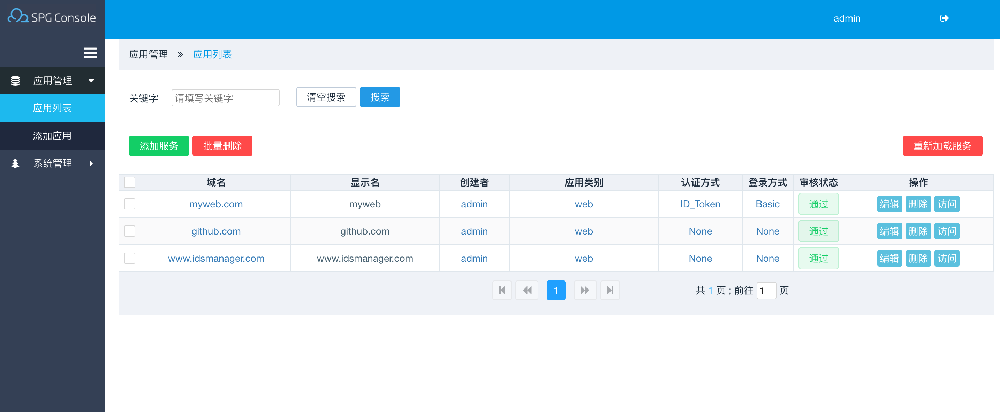
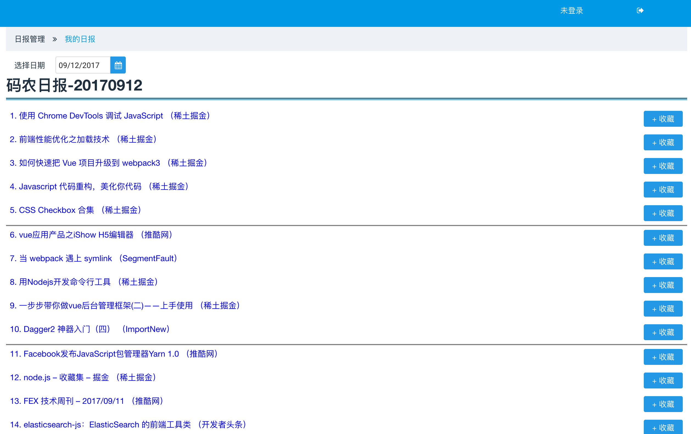

-
- Basic info. 基本信息
- 个人信息: 李由之 / 男 / 25岁
- 毕业院校: 太原理工大学 / 计算机与软件学院 / 软件工程专业
- 学 历: 本科
- 英语水平: CET-4
- 职 称: 软件设计师
- Blog: http://blog.csdn.net/m0_37529303
- GitHub: www.github.com/liyouzhi666
-
- Experience. 项目与工作经验
东软集团（大连）（2015.11 - 2017.9）
-
九州云腾 SPG(Service Provider Gateway)
本项目的主要功能是集中管理公司的组织机构、组及账户，管理员通过设置IDP中的组织单位、组及账户，实现用户的统一身份管理。一个用户，一套账户密码，对账户进行统一管理,可以在功能上替代传统的AD。其中的账户同步是提供给开发者一项重要的功能，在保证安全的前提下，可以保证账户数据的一致性，实时性。

目标是解决同一公司不同业务应用之间的身份认证问题，不同业务应用之间只需要SSO（Single Sign On）登录一次即可。此服务可以涵盖用户在公有云和私有云中的双重需求。
我在SPG中负责前端页面开发和反向代理服务器的脚本开发。Web前端开发中使用Angular4框架，UI使用Primeng组件库，实现反向代理服务创建、配置、部署的可视化，服务器的可视化监控；反向代理服务器使用Nginx，实现HTTPS的单向和双向的认证，使用OpenResty编写Nginx脚本实现对各种登录方式（如：ID_token、客户端证书...）的有效性认证。 -
华为装备测试云
“华为装备测试云”是华为（深圳）“2012实验室-装备与测试部”公开招标的项目，软件的主要功能为装备测试自动化， 测试服务一键部署，后端集群化云管理，服务微服务化使用docker容器管理，使用HTML5、CSS3实现前端表现层。
项目涉及华为工厂内测试专业设备和专业系统，并且应客户要求采用短平快模式开发，开发难度大。
我参与“华为装备测试云”从项目立项到项目结束整个开发过程，在项目中作为项目组前端负责人，主要负责Web端开发和部署，并且与后端开发人员协调制定API接口， 项目使用angular2框架进行开发，开发中我熟练使用javascript和typescript编码，还能熟练编写dockerfile，将前端代码打包为docker容器推入kubernetes集群， 熟悉nginx的代理和反向代理的配置方式，在17年2月底到3月初出与团队主要成员去深圳参与项目交付，成功完成在华为厂区实地部署“装备测试云”的工作。
-
华为装备仿真云
“华为装备仿真云”是华为（深圳）“2012实验室-装备与测试部”公开招标的项目，软件的主要功能为装备测试故障模拟仿真， 通过网口或串口采集数据，后端集群化云管理，服务微服务化使用docker容器管理，使用HTML5、CSS3实现前端表现层。
我在“华为装备仿真云”项目中作为采集和模拟模块的模块负责人，负责所管模块的Web页面设计和代码编写，并且与后端开发人员协调制定API接口， 项目使用angular2框架进行开发，开发中我熟练使用typescript编码。 -
r_car
"r_car"基于ionic2框架开发的混合app，通过调用Cordava设备接口、使用typescript和html5、css3进行开发。这是一款针对针对汽车车友的app，兼顾汽车维护点定位、 车友定位、论坛评论分享交流经验的APP。
我在项目中负责前端开发，熟悉ionic2的体系结构和ionic特有的标签，熟练使用typescript，并在app中结合百度地图，实现定位功能，成功在androids手机上运行。

-
iec61850改造
IEC61850标准是电力系统自动化领域唯一的全球通用标准。它通过标准的实现，实现了智能变电站的工程运作标准化。使得智能变电站的工程实施变得规范、统一和透明。 把现有c源码改造为以c++编写面向对象的形式，以类去区分各个模块，使得代码更加清晰，更加容易复用。
我在项目中负责iec61850通信模块调试。
个人项目
-
码农日报 源代码 Demo
业余时间出于兴趣爱好单人全栈开发的一套软件，每日更新内容，长期维护。

前端Web页面使用angular4+primeng开发，在线编辑爬虫模块中嵌入vscode内核monaco editor提供对Python的语法支持；
后端服务使用nodejs编写，使用KOA2框架处理客户端请求。
数据库使用MySQL。
爬虫使用Python编写，主要使用Beautiful Soup包爬取和解析数据。
现已部署于阿里云上提供服务，前端Web使用nginx的docker容器部署。 -
liyouzhi666个人博客 链接
主要涉及angular2+的知识、nginx的配置和操作，内容日常维护更新

-
在线个人简历 源代码 Demo
设计优雅、内容完善的静态简历页面，可以部署于github和用浏览器直接生成合适尺寸的PDF

-
智能玻璃 源代码
基于8051单片机使用c语言编写控制程序，通过51单片机接受光敏传感器传回的光照强度控制步进电机转动角度带动传送带，传送带 带动偏振片旋转，从而达到不管光照强度如何在玻璃后的接收到的光强始终不变。

-
- Skill. 技能清单
Web前端
-
HTML / CSS
能够编写语义化的 HTML，模块化的 CSS，完成复杂的布局
熟悉 angular2+ 的自定义事件、shadowDOM等与html页面有关的angular2特有的属性的处理方法
-
JavaScript
熟悉原生Javascript，能脱离jQuery等类库编码
能运用模块化、面向对象的方式编程
熟练使用 Angular2+ Typescript
-
其他
熟悉 systemJs，webpack 等前端自动化工具
了解 跨域请求、http协议、性能优化方面的一些知识
后端
-
熟悉 Linux 开发环境、 Linux 服务器环境搭建部署，日常使用 Linux 和 Mac 工作开发
熟练使用 Nginx 开发和部署，熟练使用OpenResty编写Nginx脚本
了解 Docker，能够编写dockerfile，熟悉docker的基本操作
了解 kubernetes的基础原理和基本操作
能够使用C++、nodejs 编写后端服务程序，了解golang的一些基础知识
其他
-
爱好丰富，日常维护CSDN博客和GitHub主页
自学能力强，于2014年11月通过软考获得“软件设计师”资格
工作积极认真，在东软集团2016年底获得绩效最高评级A
开发条理有序，熟练使用 Git SVN 等管理工具
善于总结归纳，熟练使用 Markdown 进行文档编写

李由之的简历
"Your will, my hands."
-
- Contact. 联系方式
- 电话: 18334707042
- 邮箱: li_you_zhi@163.com
- 微信: li-youzhi666
- QQ: 845456707
-
- Application. 应聘岗位
- 软件工程师（偏前端）
-
- Tech. 技能点
Angular2+HTML5CSS3NginxOpenRestyLuaNodeJSPythonC++
我是一个长期从事云计算相关前端业务的软件工程师，熟练使用angular、typescript，深刻理解前后端分离、微服务、MVVM架构。
并且我熟悉docker操作，熟练使用Nginx完成负载均衡、反向代理、代理缓存等工作,熟练使用OpenResty编写Nginx脚本；对于网络安全的相关知识也有所涉及。
我目前正在寻找软件工程师岗位，希望借此机会为贵司献上我的一点绵薄之力。